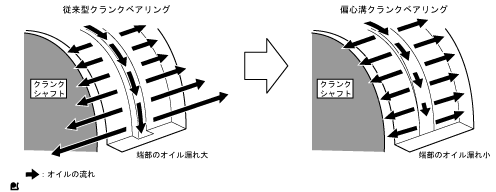

| Crankshaft Bearing |
| ● |
Eccentric groove bearings have been adopted for the crankshaft bearings. Normally, the clearance at the ends of a bearing is larger than at the center, and the amount of oil leakage is also greater. Eccentric groove bearings reduce oil leakage at the ends while ensuring oil flow at the center, making it possible to reduce the oil pump discharge volume and thereby reducing friction.
|
 |